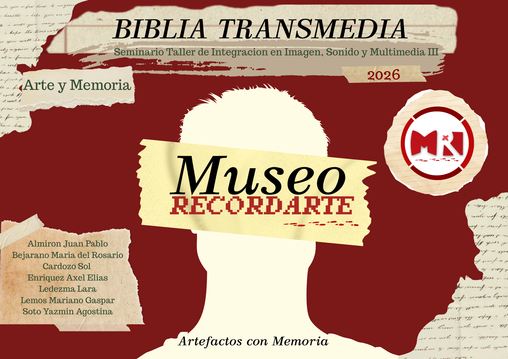

Mira estas obras de arte censuradas
Visita nuestras entrevistas a artistas y gente del ámbito para informarte más!
Encuentra las fechas donde esté esta experiencia inmersiva y real con una gran reflexión y ambientación
Visita nuestro acerbo digital donde digitalizamos y hacemos accesibles las obras de arte para el público
Fechas y Horarios
Facultad de Arte, Diseño y Ciencias de la Cultura Av. Castelli Google Maps poner después
3794049362
museorecordarte@gmail.com